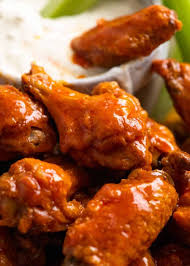

Hot Wings

Hot Wings are one of the most preferred snacks. It's crispy, spicy and good protein.
They are served hot, with celery and carrot sticks traditionally, or
a dip of ranch dressing or blue cheese dressing (the latter being
primarily served in New York). Hot Wings are also called as, just Wings, or
Buffalo Wings named such after Buffalo, New York, where they were invented.
This recipe produces perfectly seasoned crispy hot wings, tossed in a
classic spicy, buttery Buffalo Sauce with a tinge of sweetness that
are made entirely in the oven and are guilt-free.
You'll find a detailed ingredient list and step-by-step instructions in the
recipe card below.
Recipe Card
Ingredients:
Crispy Baked Wings
- 2kg chicken wings, wingettes & drumettes
- 5 tsp baking powder
- 3/4 tsp kosher salt or cooking salt
Buffalo Sauce
- 4 tbsp unsalted butter, melted
- 1/2 cup Red Hot Sauce
- 1 tbsp brown sugar
- 1/4 tsp kosher salt or cooking salt
Steps:
Crispy Baked Wings
- Preheat the oven to 120°C (all oven types).
Put one oven shelf in the lower quarter of the oven
and one in the top quarter.
- Place the wings in a large bowl. Sprinkle over baking
powder and salt. Use hands to toss well (or shake in ziplock bag)
to coat wings evenly.
- Place the wings skin side up on the rack (ok if snug, they shrink).
Bake on the lower shelf in the oven for 30 minutes.
- Move the tray up to the higher shelf and turn the oven up to 220°C
(all oven types). Bake for a further 40 to 50 minutes, rotating the
tray halfway through. The wings do not need to be turned over.
They are ready when dark golden brown and the skin is very crispy.
- Transfer the wings into a large bowl. Pour over the sauce and toss to coat.
Buffalo Sauce
- Whisk together the Sauce ingredients until the sugar is melted.
- Keep warm or reheat just prior using to coat the wings.